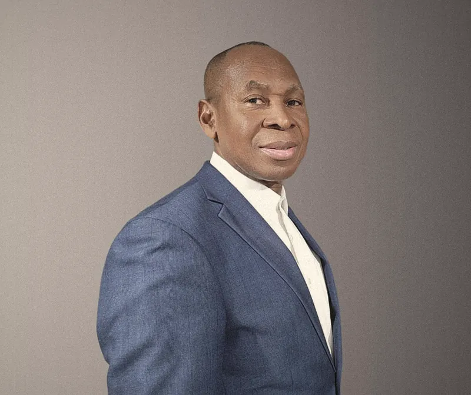

Called together, since 1995
Two lives surrendered to Christ, joined in marriage and in ministry. Their calling has carried them across continents, and home to Houston.

Pastor Joel Uzoma
A man of unshakable faith toward God, who does not see anything as impossible with Him.
Pastor Joel Uzoma was saved by Jesus Christ in 1990, and from that moment began to experience a regenerated life in Christ. With it came a strong zeal to understand the Word of God and the principles of His Kingdom. By grace, within a few years of his conversion he became a gifted teacher of the Word.
A graduate of Electronics and Computer Engineering, he answered the Lord's call into ministry in 1995. He went on to post-graduate study in Biblical Theology, later lecturing at the same Bible College. He has pastored continuously since 1999 and has planted churches in both Africa and the United States of America.
A passionate writer with deep insight into Scripture, he writes so that believers may understand the mysteries of God's Kingdom and live by them daily. He is also a songwriter and composer, with two worship albums on Spotify, Apple Music, YouTube and Amazon.
- 1990Gave his life to Jesus Christ
- 1995Called into ministry, and married Pastor Funmi
- 1999Began pastoring, a work that continues today
- 2008Published Understanding Shall Preserve You
- 2011Published You Are Coming Out Better
“With God all things are possible.”Matthew 19:26
Pastor Funmi Uzoma
She has a way of igniting the people she meets with the power of God's Word.
Pastor Funmi Uzoma gave her life to Christ in 1985 in Lagos, Nigeria, and has served God fervently ever since. She holds that God has the final verdict on every issue of life, and she lives accordingly.
A graduate of Accounting with a Master of Arts in Ministry, she is an ordained pastor of The Redeemed Christian Church of God. She has served alongside her husband since their ministry began in 1995, and is the author of Powerful Confessions for Victorious Christian Living.
Every day she broadcasts a Christian devotional to her neighbourhood and across her social platforms. She and Pastor Joel are blessed with a son.
- 1985Gave her life to Christ in Lagos, Nigeria
- 1995Entered ministry alongside Pastor Joel
- DailyThe Faith Declarations devotional